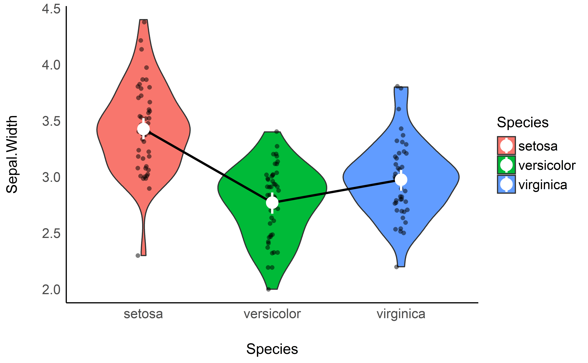
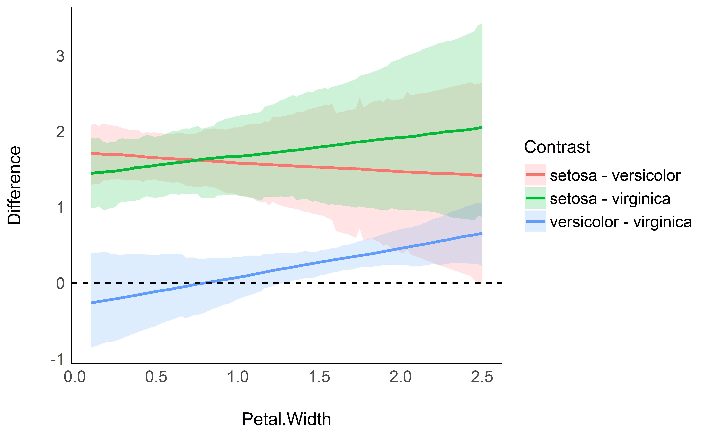

Warning: we will go full Bayesian in this vignette. If you’re not familiar with the Bayesian framework, we recommend starting with this gentle introduction.
In the previous tutorial, we computed marginal at the 3 different Species levels from the iris dataset. However, one might also want to statistically test the differences between each levels, which can be achieved through contrast analysis. Although the procedure is much more powerful, its aim is somehow analog to the post hoc analysis (pretty much consisting of pairwise t-tests) heavily used in psychological science to palliate the uselessness of ANOVAs.
Let’s do that based on the simple model from the previous tutorial:
library(ggplot2)
library(see)
library(rstanarm)
library(estimate)
model <- stan_glm(Sepal.Width ~ Species, data = iris)
means <- estimate_means(model)ggplot(iris, aes(x = Species, y = Sepal.Width, fill = Species)) +
geom_violin() +
geom_jitter2(width = 0.05, alpha = 0.5) +
geom_line(data = means, aes(y = Median, group = 1), size = 1) +
geom_pointrange(data = means, aes(y = Median, ymin = CI_low, ymax = CI_high), size = 1, color = "white") +
theme_modern()
Contrast analysis can be achieved through the estimate_contrasts function:
> Level1 | Level2 | Median | 89% CI | pd | % in ROPE | Median (std.)
> --------------------------------------------------------------------------------------
> setosa | versicolor | 0.66 | [0.54, 0.76] | 100% | 0% | 1.50
> setosa | virginica | 0.45 | [0.34, 0.56] | 100% | 0% | 1.04
> versicolor | virginica | -0.20 | [-0.31, -0.09] | 99.88% | 6.55% | -0.47As we can see here, all pairwise differences can be considered as significant.
Again, as contrast analysis is based on marginal means, it can be applied to more complex models:
> Level1 | Level2 | Median | 89% CI | pd | % in ROPE | Median (std.)
> -------------------------------------------------------------------------------------
> setosa | versicolor | 1.57 | [1.07, 2.13] | 100% | 0% | 3.61
> setosa | virginica | 1.73 | [1.18, 2.31] | 100% | 0% | 3.98
> versicolor | virginica | 0.16 | [-0.08, 0.39] | 85.60% | 31.20% | 0.36For instance, if we add Petal.Width in the model, we can see that the difference between versicolor and virginica becomes not significant (and even changes sign).
Interestingly, we can also see how these differences are modulated by another continuous variable. Based on the model above (including the interaction with Petal.Width), we will compute the contrasts at 100 equally-spaced points of Petal.Width, that we will then visualise.
contrasts <- estimate_contrasts(model, modulate = "Petal.Width", length = 100)
# Create a variable with the two levels concatenated
contrasts$Contrast <- paste(contrasts$Level1, "-", contrasts$Level2)
# Visualise the changes in the differences
ggplot(contrasts, aes(x = Petal.Width, y = Median)) +
geom_ribbon(aes(fill = Contrast, ymin = CI_low, ymax = CI_high), alpha = 0.2) +
geom_line(aes(colour = Contrast), size = 1) +
geom_hline(yintercept = 0, linetype = "dashed") +
theme_modern() +
ylab("Difference")
As we can see, the difference between versicolor and virginica increases as Petal.Width increases. In conclusion, contrast analysis is a powerful tool to interpret and understand statistical models.